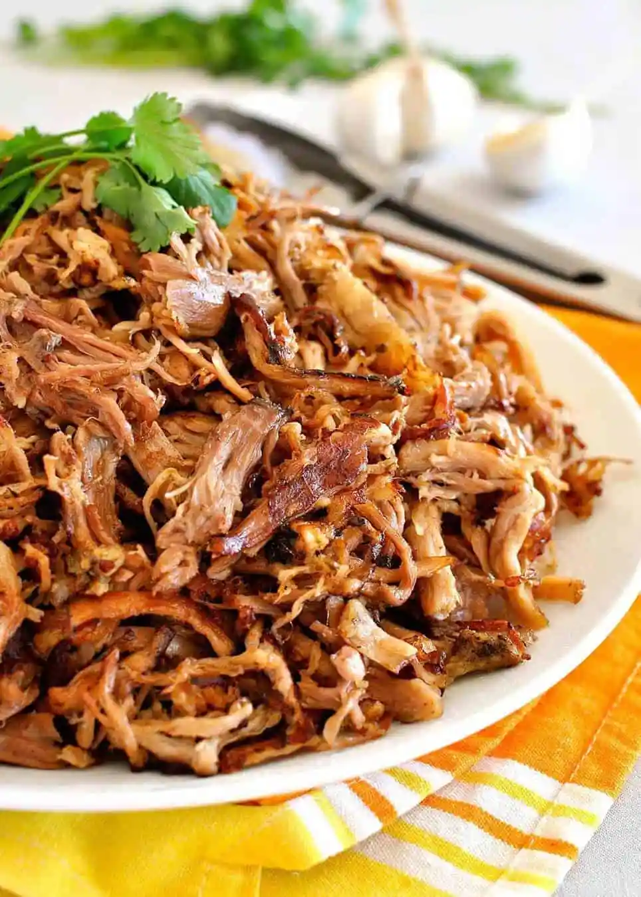

Carnitas

Description
yum carnitas is great
Ingredients
- 2 kg / 4 lb pork shoulder (pork butt) , skinless, boneless (5lb/2.5kg bone in) (Note 1)
- 2 1/2 tsp salt
- 1 tsp black pepper
- 1 onion , chopped
- 1 jalapeno , deseeded, chopped
- 4 cloves garlic, minced
- 3/4 cup juice from orange (2 oranges)
- 1 tbsp dried oregano
- 2 tsp ground cumin
- 1 tbsp olive oil
Steps
- Rinse and dry the pork shoulder, rub all over with salt and pepper.
- Combine the Rub ingredients then rub all over the pork.
- Place the pork in a slow cooker (fat cap up), top with the onion, jalapeño, minced garlic (don’t worry about
spreading it) and squeeze over the juice of the oranges.
- Slow Cook on low for 10 hours or on high for 7 hours. (Note 2 for other cook methods)
- Pork should be tender enough to shred. Remove from slow cooker and let cool slightly. Then shred using two
forks.
- Optional: Skim off the fat from the juices remaining in the slow cooker and discard.
- If you have a lot more than 2 cups of juice, then reduce it down to about 2 cups. The liquid will be salty,
it is the seasoning for the pork. Set liquid aside – don’t bother straining onion etc, it’s super soft.
- TO CRISP:
- Heat 1 tbsp of oil in a large non stick pan or well seasoned skillet over high heat. Spread pork in the pan,
drizzle over some juices. Wait until the juices evaporate and the bottom side is golden brown and crusty.
Turn and just briefly sear the other side – you don’t want to make it brown all over because then it’s too
crispy, need tender juicy bits.
- Remove pork from skillet. Repeat in batches (takes me 4 batches) – don’t crowd the pan.
- Just before serving, drizzle over more juices and serve hot, stuffed in tacos (see notes for sides, other
serving suggestion and storage/make ahead).